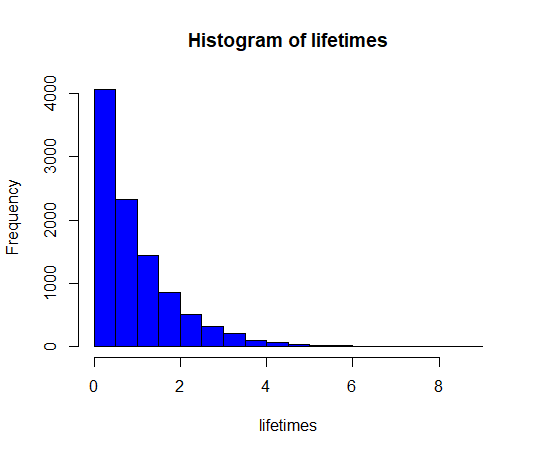

4 Simulation methods
4.1 Reliability: System lifetime
A system consists of three components A, B and C serially connected, such that A is positioned before B, which is again positioned before C. The system will be functioning only so long as A, B and C are all functioning. The lifetime in months of the three components are assumed to follow exponential distributions with means: 2 months, 3 months and 5 months, respectively (hence there are three random variables, X_{A}, X_B and X_C with exponential distributions with \lambda_{A} = ½, \lambda_{B}= ⅓ and \lambda_{C}= ⅕ resp.)
a)
Generate, by simulation, a large number (at least 1000 – go for 10000 or 100000 if your computer is up for it) of system lifetimes (hint: consider how the random variable Y = System lifetime is a function of the three X-variables: is it the sum, the mean, the median, the minimum, the maximum, the range or something even different?).
- The lifetime can be seen as the minimal value of the three random component lifetimes
k <- 10000
xA <- rexp(k, 1/2)
xB <- rexp(k, 1/3)
xC <- rexp(k, 1/5)
x <- cbind(xA, xB, xC)
lifetimes <- apply(x,1, min) # The second argument in apply() function, 1, means that there should be used rows (NOT columns) for finding the minimal value
b)
Estimate the mean system lifetime.
> mean(lifetimes)
[1] 0.9770395
c)
Estimate the standard deviation of system lifetimes.
> sd(lifetimes)
[1] 0.9791683
d)
Estimate the probability that the system fails within 1 month.
> mean(lifetimes<1)
[1] 0.6395
e)
Estimate the median system lifetime
> median(lifetimes)
[1] 0.6714813
f)
Estimate the 10th percentile of system lifetimes
> quantile(lifetimes, 0.1)
10%
0.09988259
g)
What seems to be the distribution of system lifetimes? (histogram etc)
- It seems to be the exponential distribution

hist(lifetimes, col = "blue", nclass = 30)
4.2 Basic bootstrap CI
The following measurements were given for the cylindrical compressive strength (in MPa) for 11 prestressed concrete beams:
1000 bootstrap samples (each sample hence consisting of 11 measurements) were generated from these data, and the 1000 bootstrap means were arranged on order. Refer to the smallest as \bar{x}^*_{(1)} , the second smallest as \bar{x}^*_{(2)} and so on, with the largest being \bar{x}^*_{(1000)}. Assume that
a)
Compute a 95% bootstrap confidence interval for the mean compressive strength.
- We need to find:
- By definition 1.7
- So
- And
- The answer is that we accept that
b)
Compute a 90% bootstrap confidence interval for the mean compressive strength.
- We know
- We need to find
- So
- The answer is that we accept that
4.3 Various bootstrap CIs
Consider the data from the exercise above. These data are entered into R as:
x <- c(38.43, 38.43, 38.39, 38.83, 38.45, 38.35,
38.43, 38.31, 38.32, 38.48, 38.50)
Now generate k = 1000 bootstrap samples and compute the 1000 means (go higher if your computer is fine with it)
a)
What are the 2.5%, and 97.5% quantiles (so what is the 95% confidence interval for \mu without assuming any distribution)?
> k <- 10000
> x <- c(38.43, 38.43, 38.39, 38.83, 38.45, 38.35,
+ 38.43, 38.31, 38.32, 38.48, 38.50)
> simSamples <- replicate(k, sample(x, replace=TRUE))
> simMeans <- apply(simSamples,2, mean)
> hist(simMeans)
> quantile(simMeans, c(0.025, 0.975))
2.5% 97.5%
38.38091 38.53727
b)
Find the 95% confidence interval for \mu by the parametric bootstrap assuming the normal distribution for the observations. Compare with the classical analytic approach based on the t-distribution from Chapter 2.
- Parametric distribution:
> simSamples <- replicate(k,rnorm(length(x),xBar, sBar))
> simMean <- apply(simSamples, 2, mean)
> quantile(simMean, c(0.025,0.975))
2.5% 97.5%
38.36430 38.53135
- Based on the t-distribution:
> c(xBar - qt(0.975, df=length(x)-1)*sBar/sqrt(length(x)),
+ xBar + qt(0.975, df=length(x)-1)*sBar/sqrt(length(x)))
[1] 38.35250 38.54205
> t.test(x)
One Sample t-test
data: x
t = 903.89, df = 10, p-value < 2.2e-16
alternative hypothesis: true mean is not equal to 0
95 percent confidence interval:
38.35250 38.54205
sample estimates:
mean of x
38.44727
c)
Find the 95% confidence interval for \mu by the parametric bootstrap assuming the log-normal distribution for the observations.
> logx <-log(x)
> logxMean <- mean(logx)
> logxSd <- sd(logx)
> sim_logx <- replicate(k, rlnorm(length(logx), logxMean, logxSd))
> sim_mean <- apply(sim_logx, 2, mean)
> quantile(sim_mean, c(0.025, 0.975))
2.5% 97.5%
38.36428 38.53088
d)
Find the 95% confidence interval for the lower quartile Q_1 by the parametric bootstrap assuming the normal distribution for the observations.
> Q1 <- function(x) {quantile(x, 0.25)}
> xBar <- mean(x)
> sBar <- sd(x)
> simSamples <- replicate(k,rnorm(length(x),xBar, sBar))
> simQ1 <- apply(simSamples, 2, Q1)
> quantile(simQ1, c(0.025,0.975))
2.5% 97.5%
38.25936 38.46556
e)
Find the 95% confidence interval for the lower quartile Q_1 by the non-parametric bootstrap (so without any distributional assumptions)
> simSamples <- replicate(k, sample(x, replace=TRUE))
> simQ1_nonparametric <-apply(simSamples,2, Q1)
> quantile(simQ1_nonparametric, c(0.025, 0.975))
2.5% 97.5%
38.315 38.430
4.4 Two-sample TV data
A TV producer had 20 consumers evaluate the quality of two different TV flat screens - 10 consumers for each screen. A scale from 1 (worst) up to 5 (best) were used and the following results were obtained:
| TV screen 1 | TV screen 2 |
|---|---|
| 1 | 3 |
| 2 | 4 |
| 1 | 2 |
| 3 | 4 |
| 2 | 2 |
| 1 | 3 |
| 2 | 2 |
| 3 | 4 |
| 1 | 3 |
| 1 | 2 |
a)
Compare the two means without assuming any distribution for the two samples (non-parametric bootstrap confidence interval and relevant hypothesis test interpretation).
tv1 <- c(1,2,1,3,2,1,2,3,1,1)
tv2 <- c(3,4,2,4,2,3,2,4,3,2)
k <- 100000
sim_tv1 <- replicate(k, sample(tv1, replace=TRUE))
sim_tv2 <- replicate(k, sample(tv2, replace=TRUE))
means_sim_tv1 <- apply(sim_tv1, 2, mean)
means_sim_tv2 <- apply(sim_tv2, 2, mean)
sim_dif <- means_sim_tv1 - means_sim_tv2
quantile(sim_dif, c(0.025,0.975))
2.5% 97.5%
-1.9 -0.5
- If:
- so we reject the null hypothesis, since 0 is not included in the CI of the differences.
b)
Compare the two means assuming normal distributions for the two samples without using simulations (or rather: assuming/hoping that the sample sizes are large enough to make the results approximately valid).
t.test(tv1, tv2)
Welch Two Sample t-test
data: tv1 and tv2
t = -3.1574, df = 17.932, p-value = 0.005468
alternative hypothesis: true difference in means is not equal to 0
95 percent confidence interval:
-1.99869 -0.40131
sample estimates:
mean of x mean of y
1.7 2.9
c)
Compare the two means assuming normal distributions for the two samples simulation based (parametric bootstrap confidence interval and relevant hypothesis test interpretation – in spite of the obviously wrong assumption).
tv1 <- c(1,2,1,3,2,1,2,3,1,1)
tv2 <- c(3,4,2,4,2,3,2,4,3,2)
k <- 100000
n <- length(tv1)
sim_norm_tv1 <- replicate(k, rnorm(n, mean=mean(tv1),sd=sd(tv1) ))
sim_norm_tv2 <- replicate(k, rnorm(n, mean=mean(tv2),sd=sd(tv2) ))
means_sim_tv1 <- apply(sim_norm_tv1, 2, mean)
means_sim_tv2 <- apply(sim_norm_tv2, 2, mean)
sim_norm_dif <- means_sim_tv1 - means_sim_tv2
quantile(sim_norm_dif, c(0.025,0.975))
2.5% 97.5%
-1.9371878 -0.4560157
- We reject the null hypothesis of \mu_1=\mu_2
4.5 Non-linear error propagation
The pressure P, and the volume V of one mole of an ideal gas are related by the equation PV = 8.31T, when P is measured in kilopascals, T is measured in kelvins, and V is measured in liters.
a)
Assume that P is measured to be 240.48 kPa and V to be 9.987 L with known measurement errors (given as standard deviations): 0.03 kPa and$ 0.002 L$. Estimate T and find the uncertainty in the estimate.
We know: $$ PV = 8.31T\ T = \frac{PV}{8.31} $$ Estimate T: $$ \hat{T} = 240.48*9.987 / 8.31 = 289.0101 $$
Differentiate the function with respect to both p and v:
Calculate the uncertainty:
So the uncertainty is:
b)
Assume that P is measured to be 240.48kPa and T to be 289.12K with known measurement errors (given as standard deviations): 0.03kPa and 0.02K. Estimate V and find the uncertainty in the estimate.
We know: $$ V = \frac{8.31T}{P}\ $$ Estimate $$ \hat{V} = 8.31*289.12/240.48= 9.990798 $$
Differentiate the function with respect to both p and v: $$ f(p,v) = \frac{8.31t}{p} \ \frac{\partial f}{\partial t} = \frac{1*t^0*8.31}{p}=\frac{8.31}{p} \ \frac{\partial f}{\partial p} = 8.31t*-1*p^{-1-1} =- \frac{8.31t}{p^2} \ $$
Calculate the uncertainty: $$ \sigma^2_{\hat{V}} = \left(\frac{\partial f}{\partial t}\right)2*\sigma2_t+\left(\frac{\partial f}{\partial p}\right)2*\sigma2_p = \ \frac{8.312}{p2} * \sigma^2_t + \left( -\frac{8.31*t}{p^2}\sigma_p \right)^2 =\ 8.312/240.482*0.02^2 + (- 8.31*289.12/240.482*0.03)2= 0.001425149 ^2\ $$
So the uncertainty is: $$ \sigma_{\hat{T}} = \sqrt{0.001425149 ^2} = 0.001425149 $$
c)
Assume that V is measured to be 9.987 L and T to be 289.12 K with known measurement errors (given as standard deviations): 0.002 L and 0.02 K. Estimate P and find the uncertainty in the estimate.
We know:
Estimate P:
Differentiate the function with respect to both t and v:
Calculate the uncertainty:
So the uncertainty is:
d)
Try to answer one or more of these questions by simulation (assume that the errors are normally distributed).
Let's do simulations in order to estimate P and find the the uncertainty in the estimate, where: $$ P = \frac{8.31T}{V}\ $$
> n <- 10000
> Ts <- rnorm(n, mean= 289.12, sd = 0.02)
> Vs <- rnorm(n, mean= 9.987, sd = 0.002)
> p <- 8.31*Ts/Vs
> mean(p)
[1] 240.5706
> sd(p)
[1] 0.05104125